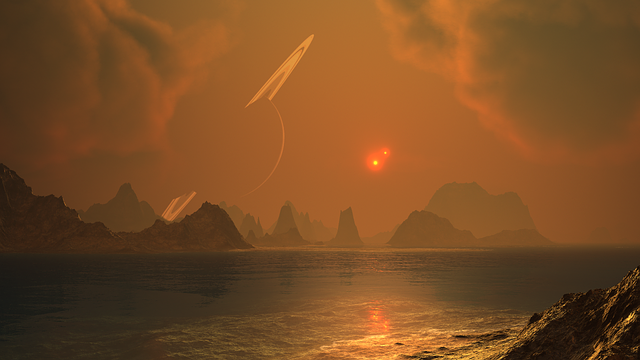

You arrive at Larendio, a planet on a different solar system. It is an intimidating setting, with toxic lakes dotting the landscape.

You follow the map's instructions to a giant government building complex with high walls. Suddenly, the gates open to reveal an enormous, 400-foot bipedal reptile that is easily the most frightening and awe-inspiring sight you have ever witnessed in your life. He roars, "You minuscule human Earthling. What is someone from such an oppressive solar system that lacks morals doing over here?"
Trembling in fear, you shout out your purpose for visit and tell him about Wild Wallace. The monster tells you Wild Wallace rescued him when he was still unhatched inside his abandoned egg, and raised him for the first few years of his life. He then convinced the emperor of the largest country in Larendio that the reptile would soon grow into an unstoppable guardian for his government complex. This allowed the monster to have a place to stay, be accepted, and fed regularly. The monster has been forever grateful to Wallace and starts becoming emotional.
Knowing that you are affilaited with Wild Wallace, the enormous monster decides against stomping on you or eating you. He thanks you for the news, and tells you to fly to Kurger Bing immediately before the emperor finds out about your intrusion. He wishes you safe travels.